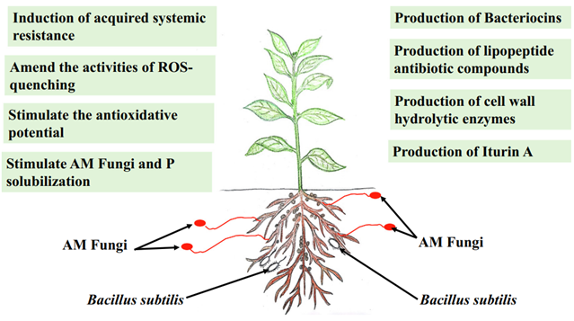

Proposed Project Implementation of BerryVax
The science behind BerryVax: Design
There are different types of microorganisms in the soil with the ability to promote the growth and enhance the health of the plants. In this project a bacteria specific chassis is used, it is called plant growth-promoting rhizobacteria (PGPR), where Pseudomonas and Bacillus are the dominant genus (Hashim, 2019). Because of their unique characteristics, diversity and their relationship with plants, these bacteria have become of great interest in the agricultural sector, given the fact that with them it is possible to create systems that release the biotic and abiotic stress from the plants (as shown in Figure 1) and are also useful as biocontrol tools that do not have a negative impact in the environment (Grover et al., 2011; Vejan et al., 2016).

Figure 1. Factors that generate biotic and abiotic stress (Umar et al., 2021)
The use of the PGPRs is focused on the enhancement of abiotic stress tolerance, specially the one caused by global warming. However, B. subtillis has an important role on the enhancement of biotic stress tolerance (Radhakrishan et al., 2017).
It has been shown that different species of Bacillus act as plant growth-promoting bacteria (PGPB) and/or as biocontrol agents (BCA) because of their ability to form stress tolerant spores and secrete metabolites that help plants grow and prevent them from pathogenic infections. These types of bacteria stand out because of their multiple metabolic capacities of producing antimicrobials, antibiotics, lytic enzymes, chitinase, cellulase, glucans and lipopeptide metabolites (Khan, 2018; Valenzuela-Aragon et al., 2019; Radhakrishan et al., 2017).
Figure 2. Mechanism of Bacillus Subtilis to combat biotic stress (Hashim, 2019)
Among the most studied mechanisms of strains of the Bacillus genus as biocontrol agents, lipopeptides stand out, such as surfactins, iturins and fengycins (some of their defense mechanisms can be seen in Figure 2). These are low molecular weight compounds with amphiphilic characteristics that provide plant protection in both pre- and post-harvest conditions. Lipopeptides can directly antagonize phytopathogenic agents and induce systemic resistance strategies in associated plants (Valenzuela et al., 2020).
Over time, different research has been made to study the mechanism by which surfactin is produced (Nakano et al., 1988; Cosmina et al., 1993; Fuma et al., 1993; Sinderen et al., 1993). The structural genes have been identified as 4 biosynthetic genes: srfAA, srfAB, srfAC, y srfAD from Bacillus spp. This group of genes was modified by the iGEM team Lyon INSA in 2012, enhancing the yield of production of this protein by the microorganism. The group of genes can also be called phosphopantetheinylates, which is a residue from the serine that can be found on each of the seven domains of the peptide transporter protein that belongs to the first three surfactin synthetase subunits (SrfAA-SrfAB-SrfAC) and AcpK, which is responsible of the synthesis of the surfactin (Figure 3).
We decided to implement these genes in the Module 1 of our genetic circuit. Since the aim of this first module is to provide elicitors to the berry plant continuously to improve the fruit quality and enhance the defense system of the plant, we chose a constitutive strong promoter and a strong RBS for B. subtilis (Terpe, 2006).

Figure 3. Proposed surfactin synthesis.
Filamentous fungi from the Fusarium genus are widely spread in the soil, making them one of the first root fungi that affect the berry crops in Mexico. Multiple pathogenic species of Fusarium produce fusaric acid (5-buthylpicolinic acid) such as Fusarium graminearum and Fusarium oxysporum f.sp. cubense (Bacon, 1996), the fusaric acid is a type of mycotoxin that decreases de plant cell viability (Kuzniak 2001, Bouizgarne et al., 2006). Based on this information, we designed our Module 2, to be able to detect the presence of F. oxysporum sensing the fusaric acid in the soil.

Figure 4. Proposed fusaric acid detection mechanism.
It was found that Pseudomonas putida has a mechanism of detection of the fusaric acid which is formed by an operon of 4 genes. This operon is controlled by a gene type LysR (pp1262) which is located before the promoter, inhibiting the ligation of the ARN polymerase to the promoter in the intergenic region between pp1262 and the operon (Hu et al., 2012; Nelson et al 2002). The fusaric acid blocks this inhibition giving the chance to the operon to activate. The iGEM team of Wageningen in 2014, isolated the promoter and the regulator region to use it as fusaric acid sensor and we decided to do same in our Module 2 (Figure4).
Subsequently, after researching the literature and making various proposals on the antifungal to be used, the chitinase enzyme was selected. Chitin in nature is abundant and widespread. In fact, it is one of the most abundant biopolymers on Earth, second only to cellulose. Chitin is found in many organisms, including the shells, exoskeletons, and intestinal lining of arthropods (crustaceans and insects). It also comprises the cell walls of many fungi, including some yeasts, and forms the structural frameworks of certain protists as well as nematode eggs. Many microbial genomes have different genes encoding chitinolytic enzymes which, have been extensively investigated, but studies on the use of microorganisms that use insoluble chitin as a carbon source around biotechnology are scarce (Stoykov, 2015). After learning of the aforementioned information, a non-pathogenic strain of interest was sought to be able to extract these genes that generate chitinase and thus be able to introduce them into B. subtilis.
It was found that several strains of B. thuringiensis produce them constitutively using the genetic sequences of chiA and chiB (Liu et al., 2010; Chen et al., 2007) having up to 83% performance in the inhibition of Fusarium oxysporum and Botryodiplodia theobromae (Swain, 2008) and a possible inhibition of the germination of B. cinerea, another fungal pest that seriously affects berry crops (Badiaa, 2012).
Since BerryVax is meant to be used in the berry crops, it was sought to implement a good biocontainment mechanism. A mechanism previously used by another iGEM team (LMU Munich in 2012), was found suitable for our project. This “Killswitch” uses a σ factor (Psspk) and a target promoter (Figure 5). These two previously mentioned are not found naturally in B. subtilis and therefore it would not cause interference in any other way than intended. The factor σ-ECF41 from B. licheniformis is produced late in the life of the microorganism, when the promoter of σG is activated just before spore generation (Wecke, 2012). In the Module 3 of our design, when σ-ECF41 is secreted, it activates its specific promoter PydfG, generating the expression of the MazF toxin, extracted from E. coli, which would degrade the mRNA (Engelberg-Kulka et al., 2005).

Figure 5. Proposed Suicide Switch.
Lastly, in order to avoid the unwanted plasmid transfer from our B. subtilis to any other bacteria in the soil through conjugation, we plan to insert the circuit in the integrative vector pDG1730. This vector contains homologous sequences of start and end of the gene α-amylase in bacillus, making that the circuit will be inserted as part of the bacillus DNA through cross-over (Salahshourifar et al., 2002). However, we plan to first test our circuit in a different vector, pUC19 to facilitate the modifications if needed.
References
Bacon, C. W., Porter, J. K., Norred, W. P., & Leslie, J. (1996). Production of fusaric acid by Fusarium species. Applied and Environmental Microbiology, 62(11), 4039-4043.
Badiaa, E. S. S. G. H. A. I. E. R., Abdeljabbar, H. E. D. I., Mohamed, R. H., Abdellatif, B. O. U. D. A. B. O. U. S., & Najla, S. Z. (2012). In vivo and in vitro evaluation of antifungal activities from a halotolerant Bacillus subtilis strain J9. African Journal of Microbiology Research, 6(19), 4073-4083.
Bouizgarne, B., El‐Maarouf‐Bouteau, H., Frankart, C., Reboutier, D., Madiona, K., Pennarun, A. M., ... & Bouteau, F. (2006). Early physiological responses of Arabidopsis thaliana cells to fusaric acid: toxic and signalling effects. New Phytologist, 169(1), 209-218.
Chen, Y. L., Lu, W., Chen, Y. H., Xiao, L., & Cai, J. (2007). Cloning, expression and sequence analysis of chiA, chiB in Bacillus thuringiensis subsp. colmeri 15A3. Wei Sheng wu xue bao= Acta Microbiologica Sinica, 47(5), 843-848.
Edreva, A. (2005). Pathogenesis-related proteins: research progress in the last 15 years. Gen Appl Plant Physiol, 31(1-2), 105-24.
Engelberg-Kulka, H., Hazan, R., & Amitai, S. (2005). mazEF: a chromosomal toxin-antitoxin module that triggers programmed cell death in bacteria. Journal of cell science, 118(19), 4327-4332.
Garred, P., Brygge, K., Sørensen, C. H., Madsen, H. O., Thiel, S., & Svejgaard, A. (1993). Mannan-binding protein—levels in plasma and upper-airways secretions and frequency of genotypes in children with recurrence of otitis media. Clinical & Experimental Immunology, 94(1), 99-104.
Grover, M., Ali, S. Z., Sandhya, V., Rasul, A., & Venkateswarlu, B. (2011). Role of microorganisms in adaptation of agriculture crops to abiotic stresses. World Journal of Microbiology and Biotechnology, 27(5), 1231-1240.
Hashem, A., Tabassum, B., & Abd_Allah, E. F. (2019). Bacillus subtilis: A plant-growth promoting rhizobacterium that also impacts biotic stress. Saudi journal of biological sciences, 26(6), 1291-1297.
Hu, R. M., Liao, S. T., Huang, C. C., Huang, Y. W., & Yang, T. C. (2012). An inducible fusaric acid tripartite efflux pump contributes to the fusaric acid resistance in Stenotrophomonas maltophilia. PLoS One, 7(12), e51053.
Khan, N., Martínez-Hidalgo, P., Ice, T. A., Maymon, M., Humm, E. A., Nejat, N., ... & Hirsch, A. M. (2018). Antifungal activity of Bacillus species against Fusarium and analysis of the potential mechanisms used in biocontrol. Frontiers in microbiology, 9, 2363.
Kuźniak, E., & Skłodowska, M. (2001). Ascorbate, glutathione and related enzymes in chloroplasts of tomato leaves infected by Botrytis cinerea. Plant Science, 160(4), 723-731.
Liu, D., Cai, J., Xie, C. C., Liu, C., & Chen, Y. H. (2010). Purification and partial characterization of a 36-kDa chitinase from Bacillus thuringiensis subsp. colmeri, and its biocontrol potential. Enzyme and Microbial Technology, 46(3-4), 252-256.
Nakano, M. M., Marahiel, M. A., & Zuber, P. (1988). Identification of a genetic locus required for biosynthesis of the lipopeptide antibiotic surfactin in Bacillus subtilis. Journal of Bacteriology, 170(12), 5662-5668.
Nelson, K. E., Weinel, C., Paulsen, I. T., Dodson, R. J., Hilbert, H., Martins dos Santos, V. A. P., ... & Fraser, C. (2002). Complete genome sequence and comparative analysis of the metabolically versatile Pseudomonas putida KT2440. Environmental microbiology, 4(12), 799-808.
Radhakrishnan, R., Hashem, A., & Abd_Allah, E. F. (2017). Bacillus: A biological tool for crop improvement through bio-molecular changes in adverse environments. Frontiers in physiology, 8, 667.
Salahshourifar, I., Halim, A. S., Sulaiman, W. A. W., & Zilfalil, B. A. (2002). Bacillus Genetic Stock Center Catalog of Strains, Seventh Edition Volume 4: Integration Vectors for Gram-Positive Organisms. The Bacillus Genetic Stock Center, 90(3), 387–391. http://www.bgsc.org/_catalogs/Catpart4.pdf
Steil, L., Serrano, M., Henriques, A. O., & Völker, U. (2005). Genome-wide analysis of temporally regulated and compartment-specific gene expression in sporulating cells of Bacillus subtilis. Microbiology, 151(2), 399-420. Stoykov, Y. M., Pavlov, A. I., & Krastanov, A. I. (2015). Chitinase biotechnology: production, purification, and application. Engineering in Life Sciences, 15(1), 30-38.
Swain, M. R., Ray, R. C., & Nautiyal, C. S. (2008). Biocontrol efficacy of Bacillus subtilis strains isolated from cow dung against postharvest yam (Dioscorea rotundata L.) pathogens. Current microbiology, 57(5), 407-411.
Terpe, K. (2006). Overview of bacterial expression systems for heterologous protein production: from molecular and biochemical fundamentals to commercial systems. Applied Microbiology and Biotechnology, 72(2), 211–222. doi:10.1007/s00253-006-0465-8
Umar, O. B., Ranti, L. A., Abdulhamid, A. K., Biola, M. R., & Victor, K. O. (2021). Stresses in Plants: Biotic and Abiotic. In Current Trends in Wheat Research. IntechOpen.
Valenzuela Ruiz, V., Gálvez Gamboa, G. T., Villa Rodríguez, E. D., Parra Cota, F. I., Santoyo, G., & Santos-Villalobos, S. D. L. (2020). Lipopeptides produced by biological control agents of the genus Bacillus: a review of analytical tools used for their study. Revista mexicana de ciencias agrícolas, 11(2), 419-432.
Valenzuela-Aragon, B., Parra-Cota, F. I., Santoyo, G., Arellano-Wattenbarger, G. L., & de los Santos-Villalobos, S. (2019). Plant-assisted selection: a promising alternative for in vivo identification of wheat (Triticum turgidum L. subsp. Durum) growth promoting bacteria. Plant and soil, 435(1), 367-384.
van Sinderen, D., Galli, G., Cosmina, P., de Ferra, F., Withoff, S., Venema, G., & Grandi, G. (1993). Characterization of the srfA locus of Bacillus subtilis: only the valine‐activating domain of srfA is involved in the establishment of genetic competence. Molecular microbiology, 8(5), 833-841.
Vejan, P., Abdullah, R., Khadiran, T., Ismail, S., & Nasrulhaq Boyce, A. (2016). Role of plant growth promoting rhizobacteria in agricultural sustainability—a review. Molecules, 21(5), 573.
Wecke, T., Halang, P., Staroń, A., Dufour, Y. S., Donohue, T. J., & Mascher, T. (2012). Extracytoplasmic function σ factors of the widely distributed group ECF41 contain a fused regulatory domain. Microbiologyopen, 1(2), 194-213.